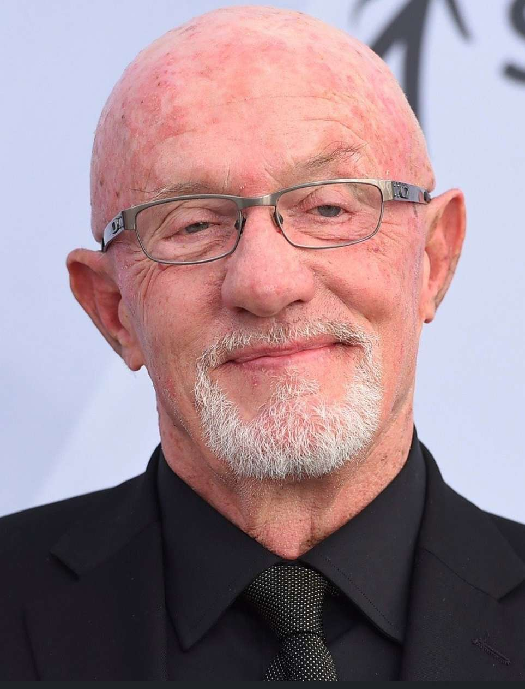

Bryan Lee Cranston é um ator, dublador, roteirista, diretor e produtor estadunidense, conhecido por interpretar Walter White na série dramática da AMC Breaking Bad, pela qual ele venceu quatro Emmys do Primetime de Melhor Ator em Série Dramática, Hal na série cômica da Fox Malcolm in the Middle e Dr.
Nascido em 27 de agosto de 1979 (idade 43 anos),Aaron Paul é um ator estadunidense conhecido por estrelar a série Breaking Bad como Jesse Pinkman, pelo qual ganhou inúmeros prêmios, tendo vencido três Primetime Emmy Awards de Melhor Ator Coadjuvante em Série Dramática.
Nascida em 11 de agosto de 1968 (idade 54 anos),Anna Gunn é uma atriz norte-americana, mais famosa por interpretar Skyler White na série de televisão Breaking Bad, tendo vencido um Prémios Emmy do Primetime por melhor atriz coadjuvante em série dramática em 2013 e 2014.
Nascido em 21 de agosto de 1992 (idade 30 anos),Roy Frank "RJ" Mitte III é um ator e produtor norte-americano. Ele é mais conhecido por seu papel como Walter "Flynn" White Jr na série da AMC, Breaking Bad. Assim como seu personagem na série, ele tem uma leve paralisia cerebral.
Nascido em 8 de abril de 1963 (idade 60 anos),Dean Joseph Norris é um ator norte-americano, mais conhecido por atuar como um agente da DEA, Hank Schrader na série Breaking Bad da AMC e como James "Big Jim" Rennie na série Under the Dome.
Nascida em 14 de março de 1973 (idade 50 anos),Betsy Ann Brandt é uma atriz norte-americana. Ela iniciou sua carreira artística como atriz de teatro em Nova York antes de se mudar para Los Angeles em busca de mais oportunidades na televisão e no cinema.
Nascido em 31 de janeiro de 1947 (idade 76 anos),Jonathan Ray Banks é um ator e dublador norte-americano. É conhecido pelos seus trabalhos em Apertem os cintos, o piloto sumiu!, 48 Horas e Um Tira da Pesada. Foi aclamado pela crítica interpretando Mike Ehrmantraut nas séries Breaking Bad e Better Call Saul, bem como Frank McPike em O Homem da Máfia.
Nascido em 26 de abril de 1958 (idade 65 anos),Giancarlo Giuseppe Alessandro Esposito é um ator ítalo-americano nascido na Dinamarca. Ele é mais conhecido por interpretar Gus Fring na série de drama criminal Breaking Bad, de 2009 a 2011, bem como na série prequela de Breaking Bad Better Call Saul, de 2017 a 2022.
Nascido em 22 de outubro de 1962 (idade 60 anos),Robert John "Bob" Odenkirk é um ator, comediante, roteirista, diretor e produtor norte-americano, mais conhecido por interpretar o advogado trambiqueiro Saul Goodman na premiada série Breaking Bad e em seu spin-off Better Call Saul.